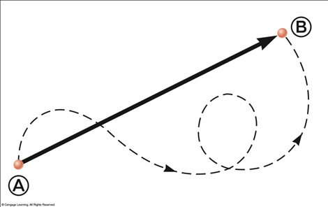

Your browser doesn't support the features required by impress.js, so you are presented with a
simplified version of this presentation.
For the best experience please use the latest Chrome, Safari or Firefox browser.
Cinemática
Estudia el movimiento de los cuerpos, sin interesarse por las causas
Magnitudes
Posición
Velocidad
Aceleración
El fenómeno más obvio y fundamental que podemos observar es el de movimiento
Conceptos importantes
Posición
Es el lugar en que se encuentra el móvil en un cierto instante de tiempo t
t
Trayectoria
Es la línea que describe un cuerpo durante su movimiento
Desplazamiento
Es una magnitud vectorial que describe el cambio neto de la posición de un cuerpo

Velocidad
Es la variación de la posición con el tiempo
Aceleración
Indica cuanto varia la velocidad al ir pasando el tiempo